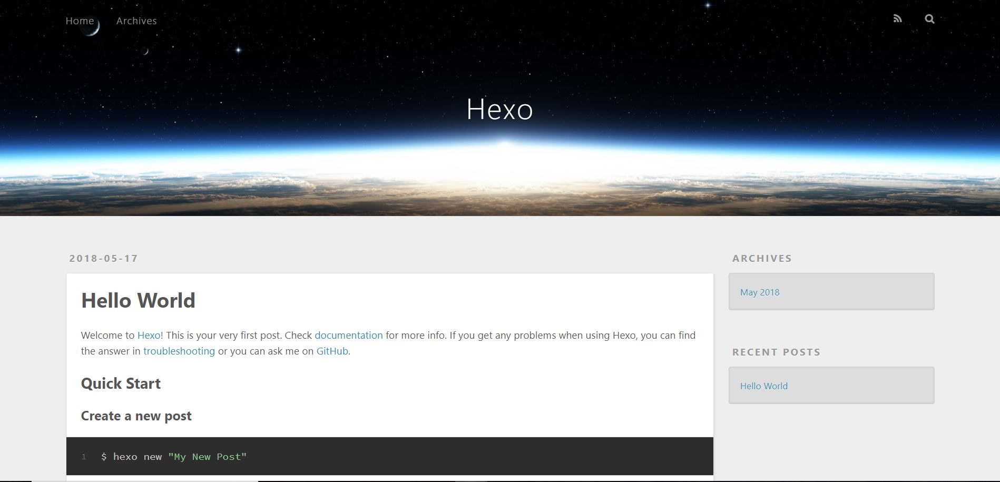

<!DOCTYPE html>
<html>
<head>
    <!-- hexo-inject:begin --><!-- hexo-inject:end --><meta charset="utf-8">
    
    <title>1.那些搭建hexo博客碰到的坑 | HtPsi&#39;s Wiki</title>
    
    
        <meta name="keywords" content="Hexo">
    
    <meta name="viewport" content="width=device-width, initial-scale=1, maximum-scale=1">
    <meta name="description" content="首次搭建hexo博客是在去年八月份（感谢github提供静态网页服务），动机也很简单就是看到xiao’s group的官方网页（那时他们的网页应该还是hexo驱动的）。后来又扒拉到了Gerard ‘t Hooft和Kuba Zakrzewski的个人主页，发现老一辈的物理学者都有一个朴素的页面来介绍自己的研究，所以就想着自己能亲手做一个网站作为礼物送给老刘。 在网上经过各种调查，发现已经有现成的很">
<meta name="keywords" content="Hexo">
<meta property="og:type" content="article">
<meta property="og:title" content="1.那些搭建hexo博客碰到的坑">
<meta property="og:url" content="https://wiki.htpsi.me/wiki/hexo/index.html">
<meta property="og:site_name" content="HtPsi&#39;s Wiki">
<meta property="og:description" content="首次搭建hexo博客是在去年八月份（感谢github提供静态网页服务），动机也很简单就是看到xiao’s group的官方网页（那时他们的网页应该还是hexo驱动的）。后来又扒拉到了Gerard ‘t Hooft和Kuba Zakrzewski的个人主页，发现老一辈的物理学者都有一个朴素的页面来介绍自己的研究，所以就想着自己能亲手做一个网站作为礼物送给老刘。 在网上经过各种调查，发现已经有现成的很">
<meta property="og:image" content="https://wiki.htpsi.me/wiki/hexo/webtest.JPG">
<meta property="og:image" content="https://wiki.htpsi.me/wiki/hexo/logo.png">
<meta property="og:updated_time" content="2018-05-19T16:22:57.059Z">
<meta name="twitter:card" content="summary">
<meta name="twitter:title" content="1.那些搭建hexo博客碰到的坑">
<meta name="twitter:description" content="首次搭建hexo博客是在去年八月份（感谢github提供静态网页服务），动机也很简单就是看到xiao’s group的官方网页（那时他们的网页应该还是hexo驱动的）。后来又扒拉到了Gerard ‘t Hooft和Kuba Zakrzewski的个人主页，发现老一辈的物理学者都有一个朴素的页面来介绍自己的研究，所以就想着自己能亲手做一个网站作为礼物送给老刘。 在网上经过各种调查，发现已经有现成的很">
<meta name="twitter:image" content="https://wiki.htpsi.me/wiki/hexo/webtest.JPG">
    

    
        <link rel="alternate" href="/atom.xml" title="HtPsi&#39;s Wiki" type="application/atom+xml">
    

    
        <link rel="icon" href="/images/wiki.png">
    

    <link rel="stylesheet" href="/libs/font-awesome/css/font-awesome.min.css">
    <link rel="stylesheet" href="/libs/open-sans/styles.css">
    <link rel="stylesheet" href="/libs/source-code-pro/styles.css">

    <link rel="stylesheet" href="/css/style.css">
    <script src="/libs/jquery/2.1.3/jquery.min.js"></script>
    <script src="/libs/jquery/plugins/cookie/1.4.1/jquery.cookie.js"></script>
    
    
        <link rel="stylesheet" href="/libs/lightgallery/css/lightgallery.min.css">
    
    
        <link rel="stylesheet" href="/libs/justified-gallery/justifiedGallery.min.css"><!-- hexo-inject:begin --><!-- hexo-inject:end -->
    
    
    
    


</head>
</html>
<body>
    <!-- hexo-inject:begin --><!-- hexo-inject:end --><div id="container">
        <header id="header">
    <div id="header-main" class="header-inner">
        <div class="outer">
            <a href="/" id="logo">
                <i class="logo"></i>
                <span class="site-title">HtPsi&#39;s Wiki</span>
            </a>
            <nav id="main-nav">
                
                    <a class="main-nav-link" href="/">首页</a>
                
                    <a class="main-nav-link" href="/archives">归档</a>
                
                    <a class="main-nav-link" href="/categories">分类</a>
                
                    <a class="main-nav-link" href="/tags">标签</a>
                
                    <a class="main-nav-link" href="/about">关于</a>
                
                    <a class="main-nav-link" href="https://www.htpsi.me" rel="external nofollow noopener noreferrer" target="_blank">Blog</a>
                
            </nav>
            
            <div id="search-form-wrap">

    <form class="search-form">
        <input type="text" class="ins-search-input search-form-input" placeholder="Rechercher">
        <button type="submit" class="search-form-submit"></button>
    </form>
    <div class="ins-search">
    <div class="ins-search-mask"></div>
    <div class="ins-search-container">
        <div class="ins-input-wrapper">
            <input type="text" class="ins-search-input" placeholder="Type something...">
            <span class="ins-close ins-selectable"><i class="fa fa-times-circle"></i></span>
        </div>
        <div class="ins-section-wrapper">
            <div class="ins-section-container"></div>
        </div>
    </div>
</div>
<script>
(function (window) {
    var INSIGHT_CONFIG = {
        TRANSLATION: {
            POSTS: 'Articles',
            PAGES: 'Pages',
            CATEGORIES: 'Catégories',
            TAGS: 'Tags',
            UNTITLED: '(Untitled)',
        },
        ROOT_URL: '/',
        CONTENT_URL: '/content.json',
    };
    window.INSIGHT_CONFIG = INSIGHT_CONFIG;
})(window);
</script>
<script src="/js/insight.js"></script>

</div>
        </div>
    </div>
    <div id="main-nav-mobile" class="header-sub header-inner">
        <table class="menu outer">
            <tr>
                
                    <td><a class="main-nav-link" href="/">首页</a></td>
                
                    <td><a class="main-nav-link" href="/archives">归档</a></td>
                
                    <td><a class="main-nav-link" href="/categories">分类</a></td>
                
                    <td><a class="main-nav-link" href="/tags">标签</a></td>
                
                    <td><a class="main-nav-link" href="/about">关于</a></td>
                
                    <td><a class="main-nav-link" href="https://www.htpsi.me" rel="external nofollow noopener noreferrer" target="_blank">Blog</a></td>
                
                <td>
                    
    <div class="search-form">
        <input type="text" class="ins-search-input search-form-input" placeholder="Rechercher">
    </div>

                </td>
            </tr>
        </table>
    </div>
</header>

        <div class="outer">
            
            
                <aside id="sidebar">
   
        
    <div class="widget-wrap" id="categories">
        <h3 class="widget-title">
            <span>Catégories</span>
            &nbsp;
            <a id="allExpand" href="#">
                <i class="fa fa-angle-double-down fa-2x"></i>
            </a>
        </h3>
        
        
        
         <ul class="unstyled" id="tree"> 
                    <li class="directory">
                        <a href="#" data-role="directory">
                            <i class="fa fa-folder"></i>
                            &nbsp;
                            Diary
                        </a>
                         <ul class="unstyled" id="tree">  <li class="file"><a href="/wiki/hello-world/">Hello World</a></li>  </ul> 
                    </li> 
                    
                    <li class="directory open">
                        <a href="#" data-role="directory">
                            <i class="fa fa-folder-open"></i>
                            &nbsp;
                            Hexo
                        </a>
                         <ul class="unstyled" id="tree">  <li class="file active"><a href="/wiki/hexo/">1.那些搭建hexo博客碰到的坑</a></li>  <li class="file"><a href="/wiki/new-feature/">2.New features</a></li>  </ul> 
                    </li> 
                    
                    <li class="directory">
                        <a href="#" data-role="directory">
                            <i class="fa fa-folder"></i>
                            &nbsp;
                            Literature materials
                        </a>
                         <ul class="unstyled" id="tree"> 
                    <li class="directory">
                        <a href="#" data-role="directory">
                            <i class="fa fa-folder"></i>
                            &nbsp;
                            Words and Sentences
                        </a>
                         <ul class="unstyled" id="tree">  <li class="file"><a href="/wiki/quote0/">Some Quotes</a></li>  </ul> 
                    </li> 
                     <li class="file"><a href="/wiki/quote/">Some quotes</a></li>  </ul> 
                    </li> 
                    
                    <li class="directory">
                        <a href="#" data-role="directory">
                            <i class="fa fa-folder"></i>
                            &nbsp;
                            Markdown
                        </a>
                         <ul class="unstyled" id="tree">  <li class="file"><a href="/wiki/Advanced-Markdown-Syntax/">2.Advanced Markdown Syntax</a></li>  <li class="file"><a href="/wiki/color-and-character/">3.Color and Characters</a></li>  <li class="file"><a href="/wiki/markdown-preview/">1.Markdown Preview</a></li>  </ul> 
                    </li> 
                     <li class="file"><a href="/wiki/index/">Welcome to HtPsi's Wiki</a></li>  </ul> 
    </div>
    <script>
        $(document).ready(function() {
            var iconFolderOpenClass  = 'fa-folder-open';
            var iconFolderCloseClass = 'fa-folder';
            var iconAllExpandClass = 'fa-angle-double-down';
            var iconAllPackClass = 'fa-angle-double-up';
            // Handle directory-tree expansion:
            // 左键单独展开目录
            $(document).on('click', '#categories a[data-role="directory"]', function (event) {
                event.preventDefault();

                var icon = $(this).children('.fa');
                var expanded = icon.hasClass(iconFolderOpenClass);
                var subtree = $(this).siblings('ul');
                icon.removeClass(iconFolderOpenClass).removeClass(iconFolderCloseClass);
                if (expanded) {
                    if (typeof subtree != 'undefined') {
                        subtree.slideUp({ duration: 100 });
                    }
                    icon.addClass(iconFolderCloseClass);
                } else {
                    if (typeof subtree != 'undefined') {
                        subtree.slideDown({ duration: 100 });
                    }
                    icon.addClass(iconFolderOpenClass);
                }
            });
            // 右键展开下属所有目录
            $('#categories a[data-role="directory"]').bind("contextmenu", function(event){
                event.preventDefault();
                
                var icon = $(this).children('.fa');
                var expanded = icon.hasClass(iconFolderOpenClass);
                var listNode = $(this).siblings('ul');
                var subtrees = $.merge(listNode.find('li ul'), listNode);
                var icons = $.merge(listNode.find('.fa'), icon);
                icons.removeClass(iconFolderOpenClass).removeClass(iconFolderCloseClass);
                if(expanded) {
                    subtrees.slideUp({ duration: 100 });
                    icons.addClass(iconFolderCloseClass);
                } else {
                    subtrees.slideDown({ duration: 100 });
                    icons.addClass(iconFolderOpenClass);
                }
            })
            // 展开关闭所有目录按钮
            $(document).on('click', '#allExpand', function (event) {
                event.preventDefault();
                
                var icon = $(this).children('.fa');
                var expanded = icon.hasClass(iconAllExpandClass);
                icon.removeClass(iconAllExpandClass).removeClass(iconAllPackClass);
                if(expanded) {
                    $('#sidebar .fa.fa-folder').removeClass('fa-folder').addClass('fa-folder-open')
                    $('#categories li ul').slideDown({ duration: 100 });
                    icon.addClass(iconAllPackClass);
                } else {
                    $('#sidebar .fa.fa-folder-open').removeClass('fa-folder-open').addClass('fa-folder')
                    $('#categories li ul').slideUp({ duration: 100 });
                    icon.addClass(iconAllExpandClass);
                }
            });  
        });
    </script>

    
        
    <div class="widget-wrap widget-list">
        <h3 class="widget-title"><span>Liens</span></h3>
        <div class="widget">
            <ul>
                
                    <li>
                        <a href="http://acfun.cn" rel="external nofollow noopener noreferrer" target="_blank">Acfun</a>
                    </li>
                
                    <li>
                        <a href="http://bilibili.com" rel="external nofollow noopener noreferrer" target="_blank">Bilibili</a>
                    </li>
                
                    <li>
                        <a href="https://www.venganza.org/" rel="external nofollow noopener noreferrer" target="_blank">Church of the FSM</a>
                    </li>
                
                    <li>
                        <a href="http://www.scp-wiki.net/" rel="external nofollow noopener noreferrer" target="_blank">SCP-Foundation</a>
                    </li>
                
                    <li>
                        <a href="https://www.pixiv.net/" rel="external nofollow noopener noreferrer" target="_blank">Pixiv</a>
                    </li>
                
                    <li>
                        <a href="https://en.wikiquote.org/" rel="external nofollow noopener noreferrer" target="_blank">Wikiquote</a>
                    </li>
                
            </ul>
        </div>
    </div>


    
    <div id="toTop" class="fa fa-angle-up"></div>
</aside>
            
            <section id="main"><article id="post-hexo" class="article article-type-post" itemscope="" itemprop="blogPost">
    <div class="article-inner">
        
        
            <header class="article-header">
                
                    <div class="article-meta">
                        
    <div class="article-category">
    	<i class="fa fa-folder"></i>
        <a class="article-category-link" href="/categories/Hexo/">Hexo</a>
    </div>

                        
    <div class="article-tag">
        <i class="fa fa-tag"></i>
        <a class="tag-link" href="/tags/Hexo/">Hexo</a>
    </div>

                        
    <div class="article-date">
        <i class="fa fa-calendar"></i>
        <a href="/wiki/hexo/">
            <time datetime="2018-05-11T12:30:14.000Z" itemprop="datePublished">2018-05-11</time>
        </a>
    </div>


                        
                    </div>
                
                
    
        <h1 class="article-title" itemprop="name">
            1.那些搭建hexo博客碰到的坑
        </h1>
    

            </header>
        
        
        <div class="article-entry" itemprop="articleBody">
        
        
            
                <div id="toc" class="toc-article">
                <strong class="toc-title">Catalogue</strong>
                    <ol class="toc"><li class="toc-item toc-level-2"><a class="toc-link" href="#hexo建站"><span class="toc-number">1.</span> <span class="toc-text">hexo建站</span></a><ol class="toc-child"><li class="toc-item toc-level-3"><a class="toc-link" href="#配置环境"><span class="toc-number">1.1.</span> <span class="toc-text">配置环境</span></a></li><li class="toc-item toc-level-3"><a class="toc-link" href="#建站"><span class="toc-number">1.2.</span> <span class="toc-text">建站</span></a></li><li class="toc-item toc-level-3"><a class="toc-link" href="#本地测试"><span class="toc-number">1.3.</span> <span class="toc-text">本地测试</span></a></li></ol></li><li class="toc-item toc-level-2"><a class="toc-link" href="#本地测试出现问题及其原因"><span class="toc-number">2.</span> <span class="toc-text">本地测试出现问题及其原因</span></a><ol class="toc-child"><li class="toc-item toc-level-3"><a class="toc-link" href="#文章路径出现乱码问题"><span class="toc-number">2.1.</span> <span class="toc-text">文章路径出现乱码问题</span></a></li><li class="toc-item toc-level-3"><a class="toc-link" href="#图片引用路径问题"><span class="toc-number">2.2.</span> <span class="toc-text">图片引用路径问题</span></a></li><li class="toc-item toc-level-3"><a class="toc-link" href="#本地服务不正常主要原因有："><span class="toc-number">2.3.</span> <span class="toc-text">本地服务不正常主要原因有：</span></a></li></ol></li><li class="toc-item toc-level-2"><a class="toc-link" href="#部署到github仓库"><span class="toc-number">3.</span> <span class="toc-text">部署到github仓库</span></a></li><li class="toc-item toc-level-2"><a class="toc-link" href="#部署后显示不正确的原因主要有："><span class="toc-number">4.</span> <span class="toc-text">部署后显示不正确的原因主要有：</span></a></li><li class="toc-item toc-level-2"><a class="toc-link" href="#参考资料"><span class="toc-number">5.</span> <span class="toc-text">参考资料</span></a></li></ol>
                </div>
            
        
        
            <p>首次搭建<font color="#0000FF">hexo</font>博客是在去年八月份（感谢github提供静态网页服务），动机也很简单就是看到<a href="http://www.phy.pku.edu.cn/~yfxiao/" rel="external nofollow noopener noreferrer" target="_blank">xiao’s group</a>的官方网页（那时他们的网页应该还是<a href="https://hexo.io/" rel="external nofollow noopener noreferrer" target="_blank">hexo</a>驱动的）。后来又扒拉到了<a href="http://www.staff.science.uu.nl/~hooft101/" rel="external nofollow noopener noreferrer" target="_blank">Gerard ‘t Hooft</a>和<a href="http://chaos.if.uj.edu.pl/~kuba/" rel="external nofollow noopener noreferrer" target="_blank">Kuba Zakrzewski</a>的个人主页，发现老一辈的物理学者都有一个朴素的页面来介绍自己的研究，所以就想着自己能亲手做一个网站作为礼物送给老刘。</p>
<p>在网上经过各种调查，发现已经有现成的很多轮子了（gihub上也有自己的网页项目），其中hexo算是国人用的比较多的，所以就选择了它来做自己的主页，用来试水。中间经过各种折腾，也算了解了好多互联网技术。从去年到现在网页换了两次主题，一次地址，也碰到了很多的坑，现在就总结一下。</p>
<p>由于时间跨度较长，很多细节都记不太清了，那就从零开始搭建一个新的博客看看会碰到什么坑吧！</p>
<h2 id="hexo建站"><a href="#hexo建站" class="headerlink" title="hexo建站"></a>hexo建站</h2><p>Hexo 是一个快速、简洁且高效的博客框架。Hexo 使用 Markdown（或其他渲染引擎）解析文章，在几秒内，即可利用靓丽的主题生成静态网页。关于前期配置及相关问题可以参考<a href="https://hexo.io/zh-cn/docs/" rel="external nofollow noopener noreferrer" target="_blank">官方文档</a>。</p>
<h3 id="配置环境"><a href="#配置环境" class="headerlink" title="配置环境"></a>配置环境</h3><p>安装 Hexo 相当简单。然而在安装前，您必须检查电脑中是否已安装下列应用程序：</p>
<ul>
<li><a href="https://nodejs.org/en/" rel="external nofollow noopener noreferrer" target="_blank">Node.js</a></li>
<li><a href="https://git-scm.com/" rel="external nofollow noopener noreferrer" target="_blank">Git</a></li>
</ul>
<p>如果您的电脑中已经安装上述必备程序，那么恭喜您！接下来只需要使用 npm 即可完成 Hexo 的安装。</p>
<figure class="highlight plain"><table><tr><td class="gutter"><pre><div class="line">1</div></pre></td><td class="code"><pre><div class="line">$ npm install -g hexo-cli</div></pre></td></tr></table></figure>
<h3 id="建站"><a href="#建站" class="headerlink" title="建站"></a>建站</h3><p>安装 Hexo 完成后，请执行下列命令，Hexo 将会在指定文件夹中新建所需要的文件。</p>
<figure class="highlight plain"><table><tr><td class="gutter"><pre><div class="line">1</div><div class="line">2</div><div class="line">3</div></pre></td><td class="code"><pre><div class="line">$ hexo init &lt;folder&gt;</div><div class="line">$ cd &lt;folder&gt;</div><div class="line">$ npm install</div></pre></td></tr></table></figure>
<p>也可以直接在文件夹中直接用命令<br><figure class="highlight plain"><table><tr><td class="gutter"><pre><div class="line">1</div><div class="line">2</div></pre></td><td class="code"><pre><div class="line">$ hexo init</div><div class="line">$ npm install</div></pre></td></tr></table></figure></p>
<p>此处会出现如下警告：<br><figure class="highlight plain"><table><tr><td class="gutter"><pre><div class="line">1</div><div class="line">2</div><div class="line">3</div><div class="line">4</div><div class="line">5</div><div class="line">6</div><div class="line">7</div><div class="line">8</div><div class="line">9</div><div class="line">10</div><div class="line">11</div><div class="line">12</div><div class="line">13</div><div class="line">14</div><div class="line">15</div><div class="line">16</div><div class="line">17</div><div class="line">18</div></pre></td><td class="code"><pre><div class="line">`-- serve-static@1.13.2</div><div class="line">  +-- encodeurl@1.0.2</div><div class="line">  +-- escape-html@1.0.3</div><div class="line">  `-- send@0.16.2</div><div class="line">    +-- debug@2.6.9</div><div class="line">    +-- destroy@1.0.4</div><div class="line">    +-- etag@1.8.1</div><div class="line">    +-- fresh@0.5.2</div><div class="line">    +-- http-errors@1.6.3</div><div class="line">    | +-- setprototypeof@1.1.0</div><div class="line">    | `-- statuses@1.5.0</div><div class="line">    +-- mime@1.4.1</div><div class="line">    +-- range-parser@1.2.0</div><div class="line">    `-- statuses@1.4.0</div><div class="line"></div><div class="line">npm WARN optional SKIPPING OPTIONAL DEPENDENCY: fsevents@^1.0.0 (node_modules\chokidar\node_modules\fsevents):</div><div class="line">npm WARN notsup SKIPPING OPTIONAL DEPENDENCY: Unsupported platform for fsevents@1.2.4: wanted &#123;&quot;os&quot;:&quot;darwin&quot;,&quot;arch&quot;:&quot;any&quot;&#125; (current: &#123;&quot;os&quot;:&quot;win32&quot;,&quot;arch&quot;:&quot;x64&quot;&#125;)</div><div class="line">INFO  Start blogging with Hexo!</div></pre></td></tr></table></figure></p>
<p>根据查找<a href="https://blog.csdn.net/aerchi/article/details/54582891" rel="external nofollow noopener noreferrer" target="_blank">资料</a>，此处<strong>warning</strong>是因为npm引用了mac osx系统的fsevent，你是在win或者Linux下使用了，所以会有警告，忽略即可。</p>
<h3 id="本地测试"><a href="#本地测试" class="headerlink" title="本地测试"></a>本地测试</h3><p>Hexo 3.0 把服务器独立成了个别模块，您必须先安装 hexo-server 才能使用。<br><figure class="highlight plain"><table><tr><td class="gutter"><pre><div class="line">1</div></pre></td><td class="code"><pre><div class="line">$ npm install hexo-server --save</div></pre></td></tr></table></figure></p>
<p>安装完成后，输入以下命令以启动服务器，您的网站会在 <code>http://localhost:4000</code> 下启动。在服务器启动期间，Hexo 会监视文件变动并自动更新，您无须重启服务器。<br><figure class="highlight plain"><table><tr><td class="gutter"><pre><div class="line">1</div></pre></td><td class="code"><pre><div class="line">$ hexo server</div></pre></td></tr></table></figure></p>
<p>但是为了服务器稳定工作，一般我们采用静态模式，在静态模式下，服务器只处理 public 文件夹内的文件，而不会处理文件变动，在执行时，您应该先自行执行 <code>hexo generate</code>。两个命令可以连写为：<br><figure class="highlight plain"><table><tr><td class="gutter"><pre><div class="line">1</div></pre></td><td class="code"><pre><div class="line">$ hexo s -g</div></pre></td></tr></table></figure></p>
<p>输入此命令后我们可以看到<br><figure class="highlight plain"><table><tr><td class="gutter"><pre><div class="line">1</div><div class="line">2</div><div class="line">3</div></pre></td><td class="code"><pre><div class="line">$ hexo s -g</div><div class="line">INFO  Start processing</div><div class="line">INFO  Hexo is running at http://localhost:4000/. Press Ctrl+C to stop.</div></pre></td></tr></table></figure></p>
<p>打开测试页面<br></p>
<p>此时本地测试已经成功，可以进行下一步部署到github上。</p>
<h2 id="本地测试出现问题及其原因"><a href="#本地测试出现问题及其原因" class="headerlink" title="本地测试出现问题及其原因"></a>本地测试出现问题及其原因</h2><h3 id="文章路径出现乱码问题"><a href="#文章路径出现乱码问题" class="headerlink" title="文章路径出现乱码问题"></a>文章路径出现乱码问题</h3><p>此问题基本都是由于<code>.md</code>文件命名不规则引起的，特别注意的是命名不要出现空格（虽然带有空格的<code>.md</code>文件仍可编译）。</p>
<h3 id="图片引用路径问题"><a href="#图片引用路径问题" class="headerlink" title="图片引用路径问题"></a>图片引用路径问题</h3><p>如果直接使用绝对路径在<code>source</code>根目录下<code>/images/xxx.jpg</code>则不会有任何问题。但是为了管理方便，一般我们会启用配置文件中的<code>post_asset_folder</code>功能。在博客的_config.yml配置中将post_asset_folder置位true。</p>
<figure class="highlight plain"><table><tr><td class="gutter"><pre><div class="line">1</div></pre></td><td class="code"><pre><div class="line">post_asset_folder: true</div></pre></td></tr></table></figure>
<p>这样就可以<code>hexo new</code>新建文章时建立一个相关的文件夹存储图片（<em>或许还可以存储音频和视频？</em>）。此时可以使用相对路径<code>xxx.jpg</code>直接饮用图片。但是一般会出现首页引用路径错误，图片无法显示的问题（点进文章内部可以正常显示）。</p>
<p>在hexo官方文档中已经有此类问题的<a href="https://hexo.io/zh-cn/docs/asset-folders.html" rel="external nofollow noopener noreferrer" target="_blank">解决方案</a>,但是当对图片样式进行复杂设计比如添加<code>style</code>属性时，内置插件似乎并不支持。在网上找到其他解决方案（<a href="http://etrd.org/2017/01/23/hexo%E4%B8%AD%E5%AE%8C%E7%BE%8E%E6%8F%92%E5%85%A5%E6%9C%AC%E5%9C%B0%E5%9B%BE%E7%89%87/" rel="external nofollow noopener noreferrer" target="_blank">技术博客地址</a>），可以通过安装插件<code>hexo-asset-image</code>的方法来解决，参见<a href="https://github.com/CodeFalling/hexo-asset-image" rel="external nofollow noopener noreferrer" target="_blank">github仓库</a>。</p>
<figure class="highlight plain"><table><tr><td class="gutter"><pre><div class="line">1</div></pre></td><td class="code"><pre><div class="line">npm install hexo-asset-image --save</div></pre></td></tr></table></figure>
<p>此时可以直接引用关联文件夹中的图片的相对地址<code>xxx.jpg</code>，而不是绝对地址<code>/images/xxx.jpg</code>，如：</p>
<figure class="highlight plain"><table><tr><td class="gutter"><pre><div class="line">1</div></pre></td><td class="code"><pre><div class="line"></div></pre></td></tr></table></figure>
<p><strong>显示效果为</strong></p>
<p></p>
<h3 id="本地服务不正常主要原因有："><a href="#本地服务不正常主要原因有：" class="headerlink" title="本地服务不正常主要原因有："></a>本地服务不正常主要原因有：</h3><ul>
<li><p>文章内容出错，如插入<code>hexo-markdown</code>不支持的格式,会爆出如下错误。</p>
<figure class="highlight plain"><table><tr><td class="gutter"><pre><div class="line">1</div><div class="line">2</div><div class="line">3</div><div class="line">4</div><div class="line">5</div><div class="line">6</div><div class="line">7</div><div class="line">8</div><div class="line">9</div><div class="line">10</div><div class="line">11</div><div class="line">12</div><div class="line">13</div><div class="line">14</div><div class="line">15</div><div class="line">16</div><div class="line">17</div><div class="line">18</div><div class="line">19</div><div class="line">20</div><div class="line">21</div><div class="line">22</div><div class="line">23</div><div class="line">24</div><div class="line">25</div></pre></td><td class="code"><pre><div class="line">$ hexo s -g</div><div class="line">INFO  Start processing</div><div class="line">FATAL Something&apos;s wrong. Maybe you can find the solution here: http://hexo.io/docs/troubleshooting.html</div><div class="line">Template render error: Error: expected end of comment, got end of file</div><div class="line"> at Object._prettifyError (E:\Web\WebPage\node_modules\nunjucks\src\lib.js:35:11)</div><div class="line"> at Template.render (E:\Web\WebPage\node_modules\nunjucks\src\environment.js:526:21)</div><div class="line"> at Environment.renderString (E:\Web\WebPage\node_modules\nunjucks\src\environment.js:364:17)</div><div class="line"> at Promise (E:\Web\WebPage\node_modules\hexo\lib\extend\tag.js:66:9)</div><div class="line"> at Promise._execute (E:\Web\WebPage\node_modules\bluebird\js\release\debuggability.js:303:9)</div><div class="line"> at Promise._resolveFromExecutor (E:\Web\WebPage\node_modules\bluebird\js\release\promise.js:483:18)</div><div class="line"> at new Promise (E:\Web\WebPage\node_modules\bluebird\js\release\promise.js:79:10)</div><div class="line"> at Tag.render (E:\Web\WebPage\node_modules\hexo\lib\extend\tag.js:64:10)</div><div class="line"> at Object.tagFilter [as onRenderEnd] (E:\Web\WebPage\node_modules\hexo\lib\hexo\post.js:230:16)</div><div class="line"> at Promise.then.then.result (E:\Web\WebPage\node_modules\hexo\lib\hexo\render.js:65:19)</div><div class="line"> at tryCatcher (E:\Web\WebPage\node_modules\bluebird\js\release\util.js:16:23)</div><div class="line"> at Promise._settlePromiseFromHandler (E:\Web\WebPage\node_modules\bluebird\js\release\promise.js:512:31)</div><div class="line"> at Promise._settlePromise (E:\Web\WebPage\node_modules\bluebird\js\release\promise.js:569:18)</div><div class="line"> at Promise._settlePromise0 (E:\Web\WebPage\node_modules\bluebird\js\release\promise.js:614:10)</div><div class="line"> at Promise._settlePromises (E:\Web\WebPage\node_modules\bluebird\js\release\promise.js:693:18)</div><div class="line"> at Async._drainQueue (E:\Web\WebPage\node_modules\bluebird\js\release\async.js:133:16)</div><div class="line"> at Async._drainQueues (E:\Web\WebPage\node_modules\bluebird\js\release\async.js:143:10)</div><div class="line"> at Immediate.Async.drainQueues (E:\Web\WebPage\node_modules\bluebird\js\release\async.js:17:14)</div><div class="line"> at runCallback (timers.js:672:20)</div><div class="line"> at tryOnImmediate (timers.js:645:5)</div><div class="line"> at processImmediate [as _immediateCallback] (timers.js:617:5)</div></pre></td></tr></table></figure>
<ul>
<li>解决方法：排查文章，但<strong>不要将文章放入草稿文件夹<code>_drafts</code>中，因为草稿文件夹虽然最后没有显示，但依然会被编译从而产生错误!</strong> 正确方式是将文章转移出根目录，然后再一个个拖进来编译。（或许可以更改后缀，去掉<code>.md</code>?）</li>
</ul>
</li>
<li><p>没有安装足够的插件：有些主题需要安装相应插件，有些则不需要。请按作者说明文档或者<code>github仓库issues</code>中解决方案操作。</p>
</li>
<li>没有使用hexo clean命令，之前public文件夹中有残留。<strong>此时能够正常编译，但是编译后可能出现网页显示紊乱。</strong></li>
<li>胡乱安装插件，例如<code>icuras</code>主题使用了<code>valine</code>，但是在<code>package.json</code>中并没有valine标签(此处存疑，或许胡乱安装插件并不会出现编译错误)。</li>
</ul>
<p><strong>如果本地服务正常，那么部署到github也因该是正常的。</strong></p>
<h2 id="部署到github仓库"><a href="#部署到github仓库" class="headerlink" title="部署到github仓库"></a>部署到github仓库</h2><p>一般来说上传之前需要安装一个部署插件<a href="https://github.com/hexojs/hexo-deployer-git" rel="external nofollow noopener noreferrer" target="_blank">hexo-deployer-git</a>。<br><figure class="highlight plain"><table><tr><td class="gutter"><pre><div class="line">1</div></pre></td><td class="code"><pre><div class="line">$ npm install hexo-deployer-git --save</div></pre></td></tr></table></figure></p>
<p>然后修改配置<br><figure class="highlight plain"><table><tr><td class="gutter"><pre><div class="line">1</div><div class="line">2</div><div class="line">3</div><div class="line">4</div></pre></td><td class="code"><pre><div class="line">deploy:</div><div class="line">  type: git</div><div class="line">  repo: &lt;repository url&gt;</div><div class="line">  branch: [branch]</div></pre></td></tr></table></figure></p>
<p>不然会出现如下错误<br><figure class="highlight plain"><table><tr><td class="gutter"><pre><div class="line">1</div><div class="line">2</div><div class="line">3</div><div class="line">4</div><div class="line">5</div><div class="line">6</div><div class="line">7</div><div class="line">8</div><div class="line">9</div><div class="line">10</div><div class="line">11</div><div class="line">12</div><div class="line">13</div><div class="line">14</div></pre></td><td class="code"><pre><div class="line">INFO  Generated: fancybox/helpers/jquery.fancybox-media.js</div><div class="line">INFO  Generated: css/fonts/fontawesome-webfont.woff</div><div class="line">INFO  Generated: fancybox/helpers/jquery.fancybox-thumbs.js</div><div class="line">INFO  Generated: fancybox/helpers/jquery.fancybox-buttons.js</div><div class="line">INFO  Generated: css/fonts/fontawesome-webfont.eot</div><div class="line">INFO  Generated: css/style.css</div><div class="line">INFO  Generated: archives/2018/05/index.html</div><div class="line">INFO  Generated: css/fonts/fontawesome-webfont.svg</div><div class="line">INFO  Generated: css/fonts/fontawesome-webfont.ttf</div><div class="line">INFO  Generated: fancybox/helpers/fancybox_buttons.png</div><div class="line">INFO  Generated: css/images/banner.jpg</div><div class="line">INFO  Generated: 2018/05/17/hello-world/index.html</div><div class="line">INFO  28 files generated in 1.13 s</div><div class="line">ERROR Deployer not found: git</div></pre></td></tr></table></figure></p>
<p>安装完成后继续部署，一般会出现如下错误：<br><figure class="highlight plain"><table><tr><td class="gutter"><pre><div class="line">1</div><div class="line">2</div><div class="line">3</div><div class="line">4</div><div class="line">5</div><div class="line">6</div><div class="line">7</div><div class="line">8</div><div class="line">9</div><div class="line">10</div><div class="line">11</div><div class="line">12</div><div class="line">13</div><div class="line">14</div><div class="line">15</div><div class="line">16</div></pre></td><td class="code"><pre><div class="line">bash: /dev/tty: No such device or address</div><div class="line">error: failed to execute prompt script (exit code 1)</div><div class="line">fatal: could not read Username for &apos;https://github.com&apos;: No error</div><div class="line">FATAL Something&apos;s wrong. Maybe you can find the solution here: http://hexo.io/docs/troubleshooting.html</div><div class="line">Error: fatal: HttpRequestException encountered.</div><div class="line">   ��������ʱ������</div><div class="line">bash: /dev/tty: No such device or address</div><div class="line">error: failed to execute prompt script (exit code 1)</div><div class="line">fatal: could not read Username for &apos;https://github.com&apos;: No error</div><div class="line"></div><div class="line">    at ChildProcess.&lt;anonymous&gt; (E:\Web\webtest2\node_modules\hexo-util\lib\spawn.js:37:17)</div><div class="line">    at emitTwo (events.js:106:13)</div><div class="line">    at ChildProcess.emit (events.js:191:7)</div><div class="line">    at ChildProcess.cp.emit (E:\Web\webtest2\node_modules\cross-spawn\lib\enoent.js:40:29)</div><div class="line">    at maybeClose (internal/child_process.js:891:16)</div><div class="line">    at Process.ChildProcess._handle.onexit (internal/child_process.js:226:5)</div></pre></td></tr></table></figure></p>
<p>出现此类错误原因不明，但是解决办法一般是更改仓库地址，从<code>HTTPS</code>切换到<code>SSH</code>，而后继续部署。<br><figure class="highlight plain"><table><tr><td class="gutter"><pre><div class="line">1</div><div class="line">2</div><div class="line">3</div><div class="line">4</div><div class="line">5</div><div class="line">6</div><div class="line">7</div><div class="line">8</div><div class="line">9</div><div class="line">10</div><div class="line">11</div><div class="line">12</div><div class="line">13</div><div class="line">14</div></pre></td><td class="code"><pre><div class="line">$ hexo d -g</div><div class="line">INFO  Start processing</div><div class="line">INFO  Files loaded in 202 ms</div><div class="line">INFO  0 files generated in 252 ms</div><div class="line">INFO  Deploying: git</div><div class="line">INFO  Clearing .deploy_git folder...</div><div class="line">INFO  Copying files from public folder...</div><div class="line">INFO  Copying files from extend dirs...</div><div class="line">On branch master</div><div class="line">nothing to commit, working tree clean</div><div class="line">Branch master set up to track remote branch master from git@github.com:xxx/webtest.git.</div><div class="line">To github.com:xxx/webtest.git</div><div class="line"> * [new branch]      HEAD -&gt; master</div><div class="line">INFO  Deploy done: git</div></pre></td></tr></table></figure></p>
<p>我们会发现部署已经成功！部署不成功的原因一般为没有配置好SSH，关于配置SSH此处不再赘述，可以参考<a href="https://www.cnblogs.com/xsilence/p/6001938.html" rel="external nofollow noopener noreferrer" target="_blank">技术博客</a>。</p>
<h2 id="部署后显示不正确的原因主要有："><a href="#部署后显示不正确的原因主要有：" class="headerlink" title="部署后显示不正确的原因主要有："></a>部署后显示不正确的原因主要有：</h2><ul>
<li><p><strong>github</strong> 只提供以<code>username</code>命名的仓库的静态网页服务，如果部署到其他仓库会只会显示文字。</p>
<ul>
<li>解决方法：使用custom domain解析到相关地址部署。</li>
<li><del>以上为猜测，推测也可以在hexo根目录配置文件<code>_config.yml</code>中更改相关配置到仓库目录解决。</del><figure class="highlight plain"><table><tr><td class="gutter"><pre><div class="line">1</div><div class="line">2</div></pre></td><td class="code"><pre><div class="line">url: https://username.github.io/repo/</div><div class="line">root: /repo/</div></pre></td></tr></table></figure>
</li>
</ul>
</li>
<li><p>github静态网页渲染速度很慢，部署到服务器后需要时间渲染。</p>
<ul>
<li>解决方法：请耐心等待,经常需要半个小时以上的时间才可以完成渲染。</li>
</ul>
</li>
<li>浏览器内存占用，包括css样式已经域名解析等。通过换浏览器能够正常显示。<ul>
<li>解决方法：清理浏览器内存</li>
</ul>
</li>
</ul>
<h2 id="参考资料"><a href="#参考资料" class="headerlink" title="参考资料"></a>参考资料</h2><blockquote>
<ul>
<li><a href="http://blog.cofess.com/2017/08/16/comon-plug-in-and-usage-of-hexo-blog.html" rel="external nofollow noopener noreferrer" target="_blank">Hexo博客常用插件及用法</a></li>
<li><a href=""></a></li>
</ul>
</blockquote>

            </div>
        
        <footer class="article-footer">
        </footer>
    </div>
</article>


    
<nav id="article-nav">
    
        <a href="/wiki/markdown-preview/" id="article-nav-newer" class="article-nav-link-wrap">
            <strong class="article-nav-caption">Plus récent</strong>
            <div class="article-nav-title">
                
                    1.Markdown Preview
                
            </div>
        </a>
    
    
        <a href="/wiki/index/" id="article-nav-older" class="article-nav-link-wrap">
            <strong class="article-nav-caption">Plus ancien</strong>
            <div class="article-nav-title">Welcome to HtPsi&#39;s Wiki</div>
        </a>
    
</nav>


    
    


<!-- baidu url auto push script -->
<script type="text/javascript">
    !function(){var e=/([http|https]:\/\/[a-zA-Z0-9\_\.]+\.baidu\.com)/gi,r=window.location.href,o=document.referrer;if(!e.test(r)){var n="//api.share.baidu.com/s.gif";o?(n+="?r="+encodeURIComponent(document.referrer),r&&(n+="&l="+r)):r&&(n+="?l="+r);var t=new Image;t.src=n}}(window);
</script>     
</section>
        </div>
        <footer id="footer">
    <div class="outer">
        <div id="footer-info" class="inner">
            HtPsi &copy; 2019
            <a rel="external nofollow noopener noreferrer" href="http://creativecommons.org/licenses/by-nc-nd/4.0/" target="_blank"></a>
            <br> Powered by <a href="http://hexo.io/" target="_blank" rel="external nofollow noopener noreferrer">Hexo</a>. Theme - <a href="https://github.com/HtPsi/hexo-theme-Wikitten" rel="external nofollow noopener noreferrer" target="_blank">Wikitten</a>
        </div>
    </div>
</footer>

        

    
        <script src="/libs/lightgallery/js/lightgallery.min.js"></script>
        <script src="/libs/lightgallery/js/lg-thumbnail.min.js"></script>
        <script src="/libs/lightgallery/js/lg-pager.min.js"></script>
        <script src="/libs/lightgallery/js/lg-autoplay.min.js"></script>
        <script src="/libs/lightgallery/js/lg-fullscreen.min.js"></script>
        <script src="/libs/lightgallery/js/lg-zoom.min.js"></script>
        <script src="/libs/lightgallery/js/lg-hash.min.js"></script>
        <script src="/libs/lightgallery/js/lg-share.min.js"></script>
        <script src="/libs/lightgallery/js/lg-video.min.js"></script>
    
    
        <script src="/libs/justified-gallery/jquery.justifiedGallery.min.js"></script>
    


<!-- Custom Scripts -->
<script src="/js/main.js"></script>

    </div><!-- hexo-inject:begin --><!-- Begin: Injected MathJax -->
<script type="text/x-mathjax-config">
  MathJax.Hub.Config({"tex2jax":{"inlineMath":[["$","$"],["\\(","\\)"]],"skipTags":["script","noscript","style","textarea","pre","code"],"processEscapes":true},"TeX":{"equationNumbers":{"autoNumber":"AMS"}}});
</script>

<script type="text/x-mathjax-config">
  MathJax.Hub.Queue(function() {
    var all = MathJax.Hub.getAllJax(), i;
    for(i=0; i < all.length; i += 1) {
      all[i].SourceElement().parentNode.className += ' has-jax';
    }
  });
</script>

<script type="text/javascript" src="//cdn.mathjax.org/mathjax/latest/MathJax.js?config=TeX-AMS-MML_HTMLorMML">
</script>
<!-- End: Injected MathJax -->
<!-- hexo-inject:end -->
</body>
